編集部まとめ記事 一覧
試合結果・速報・移籍情報・データのまとめ記事を新しい順に並べています。

試合結果
B.PREMIER開幕戦はA東京が84-73で琉球に勝利 新加入ホグ&ジョンソンが52得点、B.ONEは横浜EXが徳島下す
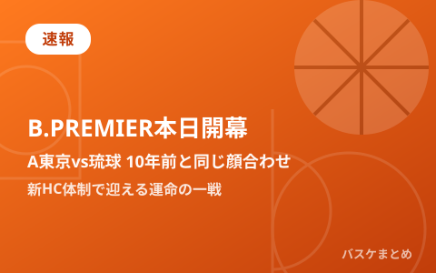
速報
B.PREMIER本日開幕 A東京vs琉球は10年前と同じ顔合わせ 新HC体制で迎える運命の一戦
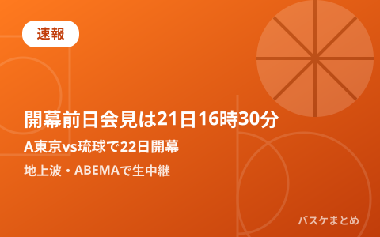
速報
B.PREMIER開幕前日会見は21日16時30分から 10年前と同じA東京vs琉球で22日開幕、地上波・ABEMAで生中継
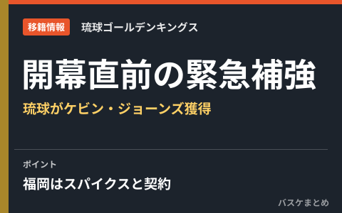
移籍情報
B.PREMIER開幕直前の緊急補強 琉球がジェレット離脱でケビン・ジョーンズ獲得、福岡はスパイクスと契約
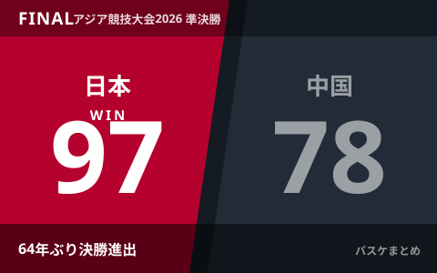
試合結果
男子日本代表、中国に97-78で快勝し64年ぶり決勝進出 銀メダル以上確定 20日19時40分から韓国と金メダルを懸け激突
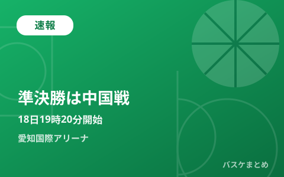
速報
男子日本代表、準決勝で中国と激突 18日19時20分から愛知国際アリーナ 勝てば大会決勝進出
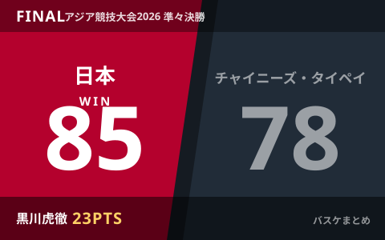
試合結果
男子日本代表、3大会ぶりベスト4進出 チャイニーズ・タイペイに85-78で競り勝つ 黒川虎徹23得点、準決勝は18日に中国と対戦
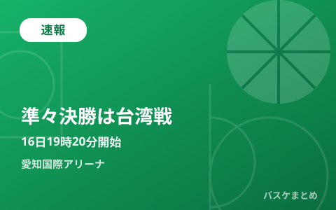
速報
男子日本代表、準々決勝の相手はチャイニーズ・タイペイに決定 16日19時20分から愛知国際アリーナで激突
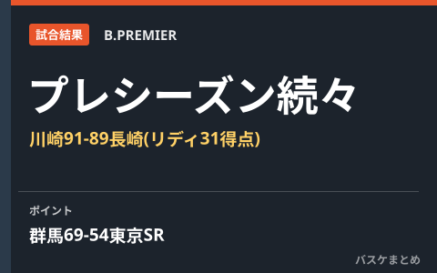
試合結果
プレシーズンマッチ続々 川崎が新加入リディ31得点で長崎に91-89の接戦制す、群馬はサンロッカーズに快勝
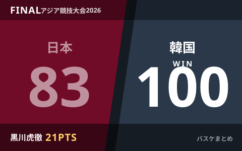
試合結果
男子日本代表、韓国に83-100で敗れ1次リーグ2位通過 黒川虎徹21得点も及ばず、準々決勝は16日
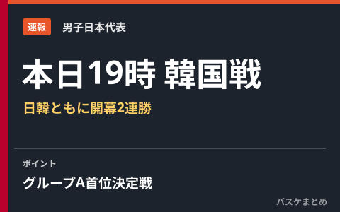
速報
男子日本代表、本日19時に韓国戦 アジア大会グループA首位決定戦 日韓ともに開幕2連勝で激突
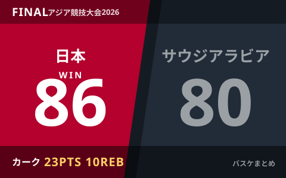
試合結果
男子日本代表、サウジアラビアに86-80で競り勝ち開幕2連勝 カーク23得点10リバウンドで1次リーグ突破、13日は韓国戦
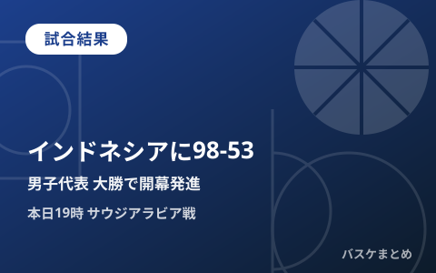
試合結果
男子日本代表、アジア大会初戦インドネシアに98-53で大勝 津屋一球23得点、本日19時はサウジアラビア戦
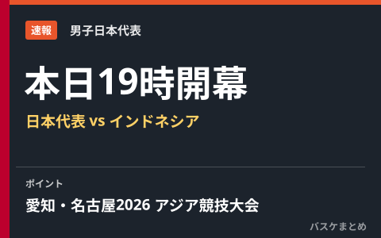
速報
【愛知・名古屋2026】バスケ男子日本代表、本日19時インドネシア戦で開幕 グループAは韓国・サウジアラビアと同組
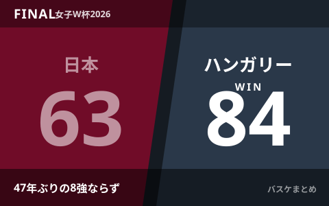
試合結果
女子日本代表、ハンガリーに63-84で敗れ47年ぶりのベスト8ならず
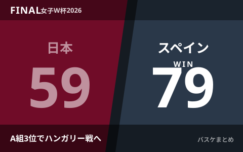
試合結果
女子日本代表、スペインに59-79で敗れるもA組3位通過 9日未明にハンガリーと8強懸けた一戦
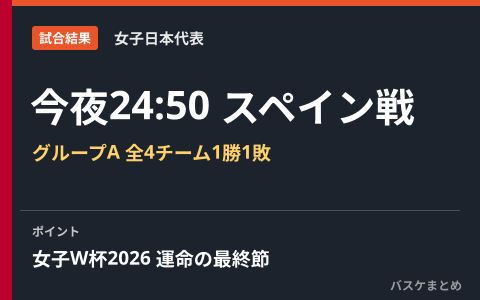
試合結果
女子日本代表、今夜24:50スペイン戦へ グループAは全4チーム1勝1敗の大混戦
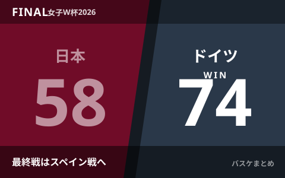
試合結果
女子日本代表、開催国ドイツに58-74で完敗 W杯2026は1勝1敗で最終戦スペインへ
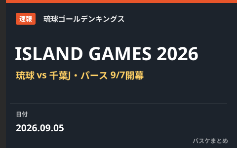
速報
琉球「ISLAND GAMES 2026」9月7日開幕 千葉J・豪州パースと国際週間
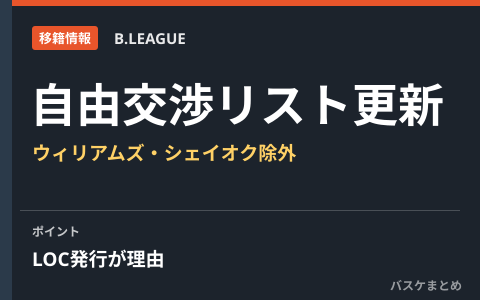
移籍情報
自由交渉選手リスト更新 ドノバン・ウィリアムズ、マリアル・シェイオクがLOC発行で除外
最終更新: 2026年10月13日 01:31